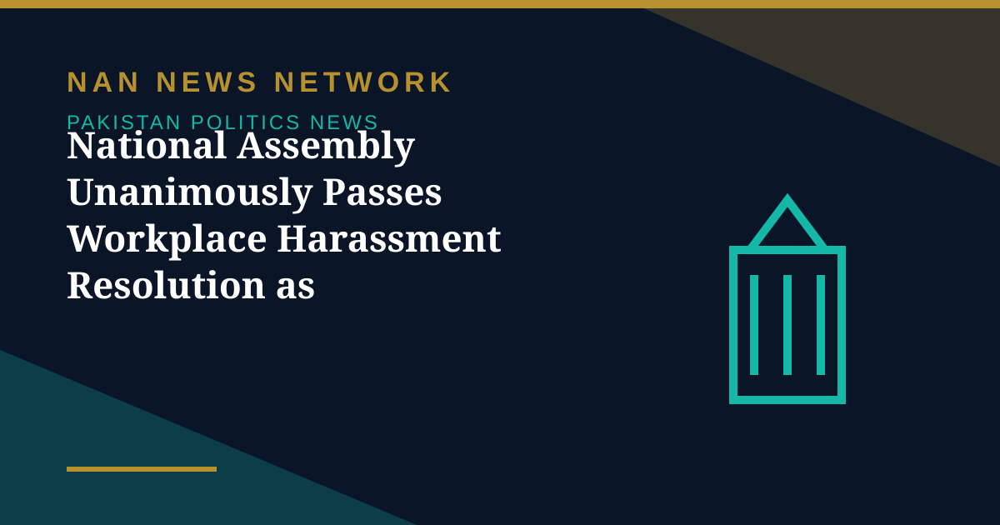

National Assembly Unanimously Passes Workplace Harassment Resolution as Parliament Is Prorogued

The National Assembly on Friday unanimously passed a resolution reaffirming Parliament's commitment to protecting the dignity, equality and rights of every individual against all forms of workplace harassment and gender-based discrimination, The Nation reported on October 31.
What the resolution says
The resolution was moved by Dr Shahida Rehmani, Member of the National Assembly and Secretary of the Women's Parliamentary Caucus. It reaffirms the legislative intent and protections in the Protection against Harassment of Women at the Workplace Act, 2010, as amended in 2022, which expressly recognises discrimination on the basis of gender, whether sexual or non-sexual, within the statutory framework of harassment.
Both houses close their sessions
Both houses of Parliament were prorogued on Friday, October 30, ending the current session; neither house meets again until a new session is called. Before closing, the Senate passed two education bills already passed by the National Assembly — the Federal Board of Intermediate and Secondary Education (Amendment) Bill 2026 and the Pakistan Study Centres (Amendment) Bill 2026. A bill becomes an Act only after the President gives assent, so the education bills now await that step.
Sources: The Nation, PakEra, October 31, 2026
More on Pakistan Politics News
- PPP Courts Opposition to Join 30-Member Electoral Reforms Committee
- National Assembly Passes Four Government Amendment Bills by Majority Vote
- Opposition Signals Willingness to Join Electoral Reforms Committee After PPP Outreach
- National Assembly Session Suspended After Speaker Finds House Lacks Quorum
- Pakistan Proposes Parliamentary Friendship Group With Turkmenistan
- Lahore High Court Judge Mohsin Akhtar Kayani Resigns, Citing Executive Grip on Judiciary
- Pakistan Says Afghan Firing Kills One in South Waziristan Border District
- Pakistan Marks Kashmir Black Day With Rallies Across the Country
- National Assembly Passes Seven Private Members' Bills, Sends Six to Committees
- Pakistan Strongly Condemns Houthi Missile Attacks Near Makkah and Madinah
- Pakistan, Saudi Arabia and Turkiye Reported to Hold Tehran Talks on De-escalation
- Pakistan LPG Shortage Worsens as Iran Border Crossings Close
- Pakistan Ends Machine-Readable Passports and Switches Fully to E-Passports
- Pakistan Calls for a Fairer Global Order at the United Nations